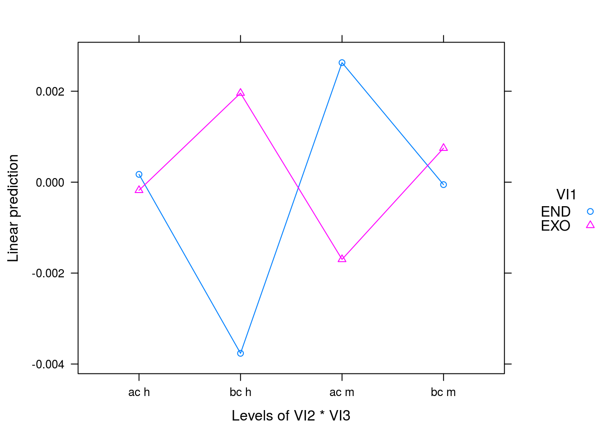
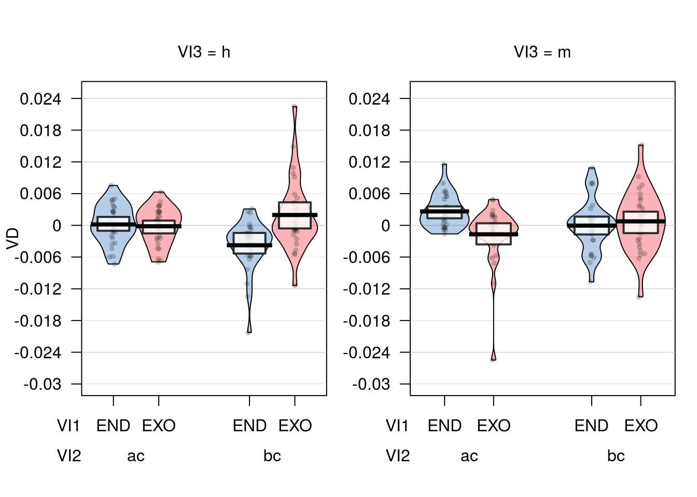

Chapter 11 ANOVA repeated measures
Perform a repeated measures ANOVA and get posthocs
Libraries
if (!require('pacman')) install.packages('pacman'); library('pacman')
p_load(tidyverse, yarrr, readxl, stringr, afex) Import data
We use the following dataset.
#Import to variable "datos"
datos = read_excel("Data/08-Data_analysis/ANOVA_repeated_measures.xlsx") %>%
dplyr::mutate(ID = 1:n())
datos## # A tibble: 29 x 9
## ENDObch ENDOacm ENDObcm ENDOach EXObch
## <dbl> <dbl> <dbl> <dbl> <dbl>
## 1 -0.0134618198 0.0079598110 -1.724309e-03 0.0001241273 0.0033291737
## 2 -0.0007571547 0.0001350424 1.087823e-02 -0.0044011702 0.0225063299
## 3 -0.0021596171 0.0018874678 1.396156e-03 0.0002438996 -0.0009685716
## 4 -0.0021261532 0.0017017525 7.949985e-03 -0.0009560923 0.0019598747
## 5 -0.0014105901 -0.0009019787 1.158694e-03 -0.0006908299 -0.0008552055
## 6 0.0031665364 -0.0016276746 1.400152e-03 -0.0035374637 -0.0017644341
## 7 -0.0034358999 -0.0005719841 -7.021927e-03 0.0033983457 0.0109482298
## 8 -0.0038080731 0.0054854822 4.322780e-04 -0.0033633460 0.0098447537
## 9 -0.0003044510 -0.0004639236 -1.068726e-02 0.0075849477 -0.0046718045
## 10 -0.0016039516 0.0008493854 6.954175e-05 0.0002653357 0.0042829250
## # ... with 19 more rows, and 4 more variables: EXOacm <dbl>, EXObcm <dbl>,
## # EXOach <dbl>, ID <int>EXPERIMENT DESIGN
2 x 2 x 2 - Repeated measures
- VI1 = ENDO / EXO
- VI2 = Temporal windows (bc - before change vs ac - after change)
- VI3 = Percepts (h - horse vs m - morse)
Prepare data
# Wide to Long
datos_long = datos %>% gather(Condicion, VD, 1:8)
# We extract conditions from Condicion column. Convert char variables to factor
datos_long = datos_long %>%
mutate(VI1 = str_sub(datos_long$Condicion, 1,3)) %>%
mutate(VI2 =
ifelse(VI1 == "END",
str_sub(datos_long$Condicion, 5,6),
str_sub(datos_long$Condicion, 4,5))) %>%
mutate(VI3 =
ifelse(VI1 == "END",
str_sub(datos_long$Condicion, 7,7),
str_sub(datos_long$Condicion, 6,6))) %>%
mutate(VI1 = as.factor(VI1)) %>%
mutate(VI2 = as.factor(VI2)) %>%
mutate(VI3 = as.factor(VI3)) %>%
mutate(Condicion = as.factor(Condicion))
datos_long## # A tibble: 232 x 6
## ID Condicion VD VI1 VI2 VI3
## <int> <fctr> <dbl> <fctr> <fctr> <fctr>
## 1 1 ENDObch -0.0134618198 END bc h
## 2 2 ENDObch -0.0007571547 END bc h
## 3 3 ENDObch -0.0021596171 END bc h
## 4 4 ENDObch -0.0021261532 END bc h
## 5 5 ENDObch -0.0014105901 END bc h
## 6 6 ENDObch 0.0031665364 END bc h
## 7 7 ENDObch -0.0034358999 END bc h
## 8 8 ENDObch -0.0038080731 END bc h
## 9 9 ENDObch -0.0003044510 END bc h
## 10 10 ENDObch -0.0016039516 END bc h
## # ... with 222 more rowsRepeated measures ANOVA
# AFEX PACKAGE
# https://cran.r-project.org/web/packages/afex/afex.pdf
a = aov_ez("ID", "VD", datos_long,
within = c("VI1", "VI2", "VI3"))
# Show results
summary(a)##
## Univariate Type III Repeated-Measures ANOVA Assuming Sphericity
##
## SS num Df Error SS den Df F Pr(>F)
## (Intercept) 0.00000013 1 0.00014494 28 0.0251 0.875310
## VI1 0.00001238 1 0.00022796 28 1.5210 0.227715
## VI2 0.00001502 1 0.00147081 28 0.2859 0.597112
## VI3 0.00004282 1 0.00089968 28 1.3327 0.258083
## VI1:VI2 0.00045494 1 0.00125821 28 10.1241 0.003565 **
## VI1:VI3 0.00028700 1 0.00113938 28 7.0531 0.012911 *
## VI2:VI3 0.00000883 1 0.00010388 28 2.3811 0.134039
## VI1:VI2:VI3 0.00000323 1 0.00015865 28 0.5709 0.456198
## ---
## Signif. codes: 0 '***' 0.001 '**' 0.01 '*' 0.05 '.' 0.1 ' ' 1# Plot results
lsmip(a, VI1 ~ VI2 * VI3)
pirateplot(VD ~ VI1 * VI2 * VI3, datos_long)
Post-hocs
lsmeans(a, c("VI1", "VI2", "VI3"), contr = "pairwise")## $lsmeans
## VI1 VI2 VI3 lsmean SE df lower.CL upper.CL
## END ac h 1.714029e-04 0.0009120423 137.1 -0.0016320858 0.0019748915
## EXO ac h -1.788841e-04 0.0009120423 137.1 -0.0019823727 0.0016246046
## END bc h -3.764511e-03 0.0009120423 137.1 -0.0055680000 -0.0019610227
## EXO bc h 1.958877e-03 0.0009120423 137.1 0.0001553885 0.0037623657
## END ac m 2.628704e-03 0.0009120423 137.1 0.0008252155 0.0044321928
## EXO ac m -1.698224e-03 0.0009120423 137.1 -0.0035017124 0.0001052648
## END bc m -5.434844e-05 0.0009120423 137.1 -0.0018578371 0.0017491402
## EXO bc m 7.477451e-04 0.0009120423 137.1 -0.0010557436 0.0025512337
##
## Confidence level used: 0.95
##
## $contrasts
## contrast estimate SE df t.ratio p.value
## END,ac,h - EXO,ac,h 0.0003502869 0.001309353 73.37 0.268 1.0000
## END,ac,h - END,bc,h 0.0039359142 0.001357235 66.25 2.900 0.0890
## END,ac,h - EXO,bc,h -0.0017874742 0.001345954 68.77 -1.328 0.8850
## END,ac,h - END,ac,m -0.0024573013 0.001190476 69.20 -2.064 0.4479
## END,ac,h - EXO,ac,m 0.0018696267 0.001238179 70.69 1.510 0.7996
## END,ac,h - END,bc,m 0.0002257513 0.001713480 108.74 0.132 1.0000
## END,ac,h - EXO,bc,m -0.0005763422 0.001302966 69.79 -0.442 0.9998
## EXO,ac,h - END,bc,h 0.0035856273 0.001345954 68.77 2.664 0.1517
## EXO,ac,h - EXO,bc,h -0.0021377612 0.001357235 66.25 -1.575 0.7631
## EXO,ac,h - END,ac,m -0.0028075882 0.001238179 70.69 -2.268 0.3259
## EXO,ac,h - EXO,ac,m 0.0015193397 0.001190476 69.20 1.276 0.9045
## EXO,ac,h - END,bc,m -0.0001245356 0.001302966 69.79 -0.096 1.0000
## EXO,ac,h - EXO,bc,m -0.0009266291 0.001713480 108.74 -0.541 0.9994
## END,bc,h - EXO,bc,h -0.0057233885 0.001309353 73.37 -4.371 0.0010
## END,bc,h - END,ac,m -0.0063932155 0.001713480 108.74 -3.731 0.0071
## END,bc,h - EXO,ac,m -0.0020662876 0.001302966 69.79 -1.586 0.7570
## END,bc,h - END,bc,m -0.0037101629 0.001190476 69.20 -3.117 0.0512
## END,bc,h - EXO,bc,m -0.0045122564 0.001238179 70.69 -3.644 0.0113
## EXO,bc,h - END,ac,m -0.0006698271 0.001302966 69.79 -0.514 0.9996
## EXO,bc,h - EXO,ac,m 0.0036571009 0.001713480 108.74 2.134 0.4000
## EXO,bc,h - END,bc,m 0.0020132255 0.001238179 70.69 1.626 0.7332
## EXO,bc,h - EXO,bc,m 0.0012111320 0.001190476 69.20 1.017 0.9703
## END,ac,m - EXO,ac,m 0.0043269280 0.001309353 73.37 3.305 0.0302
## END,ac,m - END,bc,m 0.0026830526 0.001357235 66.25 1.977 0.5049
## END,ac,m - EXO,bc,m 0.0018809591 0.001345954 68.77 1.397 0.8553
## EXO,ac,m - END,bc,m -0.0016438754 0.001345954 68.77 -1.221 0.9228
## EXO,ac,m - EXO,bc,m -0.0024459689 0.001357235 66.25 -1.802 0.6209
## END,bc,m - EXO,bc,m -0.0008020935 0.001309353 73.37 -0.613 0.9986
##
## P value adjustment: tukey method for comparing a family of 8 estimateslsmeans(a, "VI1", contr = "pairwise")## NOTE: Results may be misleading due to involvement in interactions## $lsmeans
## VI1 lsmean SE df lower.CL upper.CL
## END -0.0002546882 0.0002395926 53.36 -0.0007351753 0.0002257989
## EXO 0.0002073786 0.0002395926 53.36 -0.0002731085 0.0006878657
##
## Results are averaged over the levels of: VI2, VI3
## Confidence level used: 0.95
##
## $contrasts
## contrast estimate SE df t.ratio p.value
## END - EXO -0.0004620668 0.0003746565 28 -1.233 0.2277
##
## Results are averaged over the levels of: VI2, VI3lsmeans(a, "VI2", contr = "pairwise")## NOTE: Results may be misleading due to involvement in interactions## $lsmeans
## VI2 lsmean SE df lower.CL upper.CL
## ac 0.0002307498 0.0004987291 33.47 -0.0007833862 0.0012448858
## bc -0.0002780594 0.0004987291 33.47 -0.0012921954 0.0007360766
##
## Results are averaged over the levels of: VI1, VI3
## Confidence level used: 0.95
##
## $contrasts
## contrast estimate SE df t.ratio p.value
## ac - bc 0.0005088092 0.0009516679 28 0.535 0.5971
##
## Results are averaged over the levels of: VI1, VI3lsmeans(a, "VI3", contr = "pairwise")## NOTE: Results may be misleading due to involvement in interactions## $lsmeans
## VI3 lsmean SE df lower.CL upper.CL
## h -0.0004532789 0.0004010121 36.79 -0.0012659605 0.0003594027
## m 0.0004059692 0.0004010121 36.79 -0.0004067123 0.0012186508
##
## Results are averaged over the levels of: VI1, VI2
## Confidence level used: 0.95
##
## $contrasts
## contrast estimate SE df t.ratio p.value
## h - m -0.0008592481 0.0007443063 28 -1.154 0.2581
##
## Results are averaged over the levels of: VI1, VI2